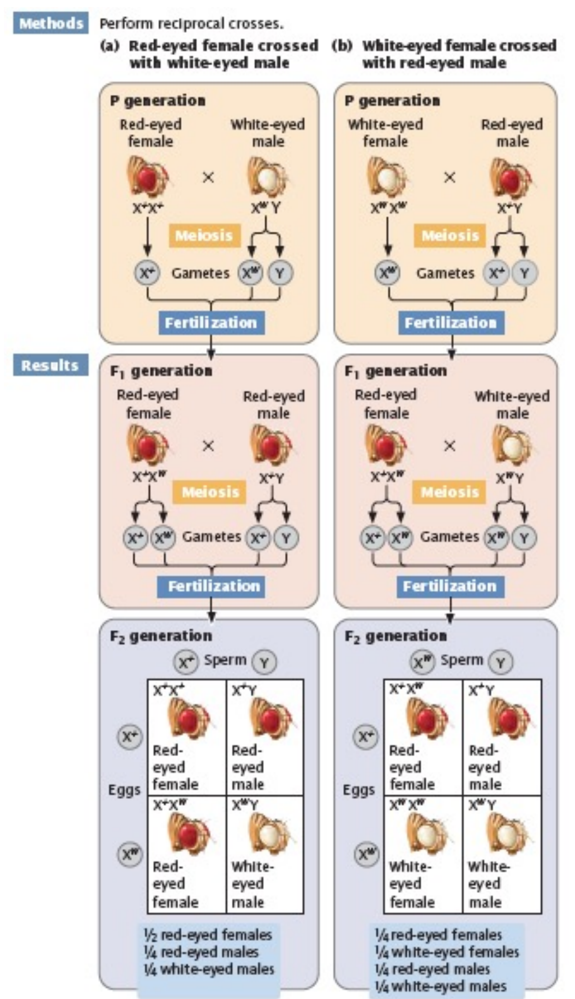

Tương tác gen và liên kết giới tính
Di truyền · Mở rộng Mendel, biểu hiện và NST giới tính · 8 trắc nghiệm và 1 tự luận
Bắt đầu học ↓Học buổi rút gọn · đọc hình và làm 10 câu · Học trọn chương và làm bộ 80 trắc nghiệm, 15 tự luận
Sau buổi này
- Giải thích khi nào hai locus phân li độc lập nhưng cho tỷ lệ kiểu hình khác 9:3:3:1.
- Tách kiểu trội và độ thấm ở một locus với tương tác nhiều locus.
- Tính xác suất tính trạng liên kết X theo nhóm giới tính và trong toàn bộ con lai.
Gợi nhớ · 5 phút
Từ 9:3:3:1, tính tỷ lệ mới nếu A_bb và aaB_ cho cùng kiểu hình. Thử tiếp khi aabb cũng cho kiểu hình đó.
Đọc hình và nắm kiến thức · 20 phút
Quan sát hình minh họa

Hai cột hình minh họa các chiều lai ngược nhau trong thí nghiệm Morgan. Lần dấu mắt trắng riêng ở con cái và con đực để suy đường truyền trên X.
Quan sát · So hai cột, ghi lại phía bố mẹ nào mắt trắng và giới nào ở F₁ biểu hiện mắt trắng.
Dự đoán · Nếu cá thể mẹ mắt trắng mang hai X lặn, con đực F₁ nhận X mang allele mắt từ ai?
Mở giải thích sau khi dự đoán
Con đực nhận X từ mẹ và Y từ bố. Ở chiều mẹ mắt trắng được minh họa, toàn bộ con đực F₁ nhận X mang allele mắt trắng theo mô hình.
- Tiền chất
C_ có hoạt tính bước 1. cc làm chuỗi dừng trước chất trung gian.
- Chất trung gian
D_ có hoạt tính bước 2. dd làm chuỗi dừng trước sắc tố.
- Sắc tố thân
Chỉ C_D_ có cả hai bước và cho thân tím.
- Màu mắt
Locus N trên X có đường truyền riêng. Con đực nhận X từ mẹ, Y từ bố trong phép lai này.
C, D thuộc NST thường khác nhau và N nằm trên X trong mô hình.
Đọc hình để tự rút ra cơ chế
Quan sát · Một mô hình tạo màu cần hai bước liên tiếp. Kiểu gene làm mất bước đầu không tạo tiền chất cho bước sau.
Dự đoán · Nếu đổi allele ở gene bước sau trong nền đã mất bước đầu, bạn dự đoán kiểu hình đổi ra sao?
Mở giải thích sau khi dự đoán
Trong mô hình đơn giản này, bước sau thiếu cơ chất, nên đổi allele ở bước sau có thể không đổi kiểu hình. Đây là cách một locus che biểu hiện của locus khác.
Ở một locus, chọn đúng mức quan sát
Trội hoàn toàn: dị hợp trùng kiểu hình với một lớp đồng hợp. Trội không hoàn toàn: dị hợp trung gian. Đồng trội: cả hai dạng sản phẩm hoặc kiểu hình được phát hiện ở dị hợp. Độ thấm đo tỷ lệ cá thể mang kiểu gen có kiểu hình, còn độ biểu hiện mô tả mức độ của tính trạng. Nếu một kiểu gen gây chết, tỷ lệ ở nhóm sống khác tỷ lệ lúc hình thành hợp tử.
Nhiều locus, gộp các nhóm theo cơ chế
Hai bước nối tiếp cần hoạt tính của C và D để tạo sắc tố. Trong CcDd × CcDd phân li độc lập, C_D_ có sắc tố (9/16); C_dd, ccD_ và ccdd đều thiếu sắc tố (7/16). Tỷ lệ kiểu hình đổi do cách gộp dù xác suất sinh bốn nhóm vẫn là 9:3:3:1.
Bài giải mẫu · liên kết X và hai mẫu số
Basis: toàn bộ con của XᴺXⁿ × XᴺY. Một nửa con là đực theo mô hình và trong nhóm đực có 1/2 cơ hội nhận Xⁿ từ mẹ. P(mắt nhạt | đực) = 1/2 và P(đực và mắt nhạt) = 1/2 × 1/2 = 1/4.
X và hai locus thân phân li độc lập theo đề. P(thân nhạt và mắt nhạt) = 7/16 × 1/4 = 7/64 ≈ 10,94% toàn bộ con. Đổi sang số con kỳ vọng: 256 × 7/64 = 28 con. Kiểm: con cái đều nhận Xᴺ từ bố nên không đóng góp vào nhóm mắt nhạt đã tính.
Liên hệ thực tế
Khi phân tích lệch tỷ lệ, ghi đang đo sản phẩm phân tử, kiểu hình hay nhóm còn sống. Nếu hai chiều lai thuận nghịch cho kết quả khác, kiểm các giả thiết liên kết giới tính, hiệu ứng mẹ hoặc di truyền tế bào chất bằng dữ kiện phân biệt.
Tự kiểm · 25 phút
Hai kiểu hình trên cùng lứa ruồi mô hình
C và D ở các NST thường khác nhau, độc lập với locus N trên X. Chỉ ruồi C_D_ có thân tím. Mắt nhạt do allele lặn Xⁿ ngoài vùng tương đồng X–Y. Lai cái CcDd XᴺXⁿ × đực CcDd XᴺY. Cho tỷ lệ XX:XY = 1:1, độ sống tương đương và độ thấm hoàn toàn.
Đối chiếu và hẹn ôn · 10 phút
Chọn một chỗ còn phân vân. Giải thích lại bằng lời của mình rồi thử một câu cùng dạng.
Mở đáp án và giải thích · DT-05
Xem trong bộ bài tập của chủ đề
Học tiếp theo slide